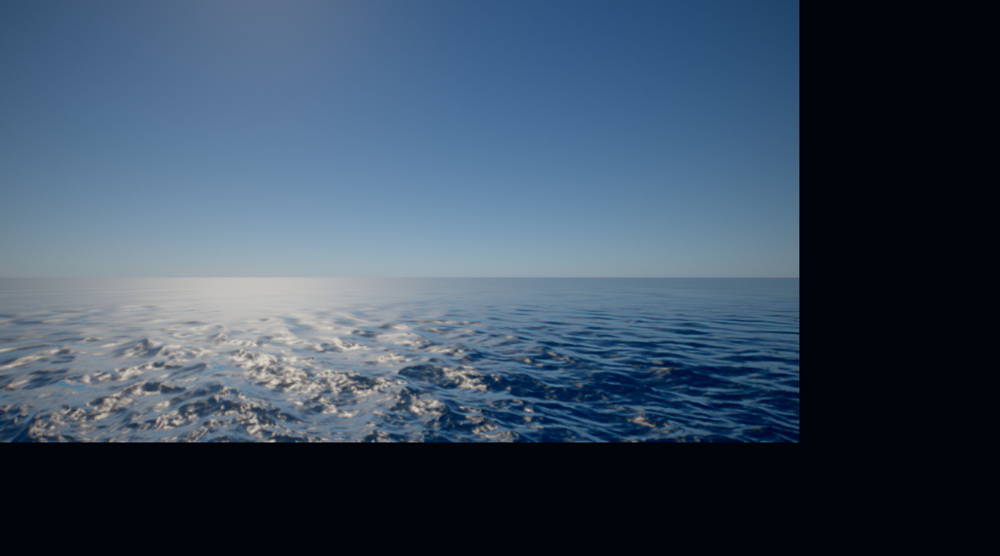
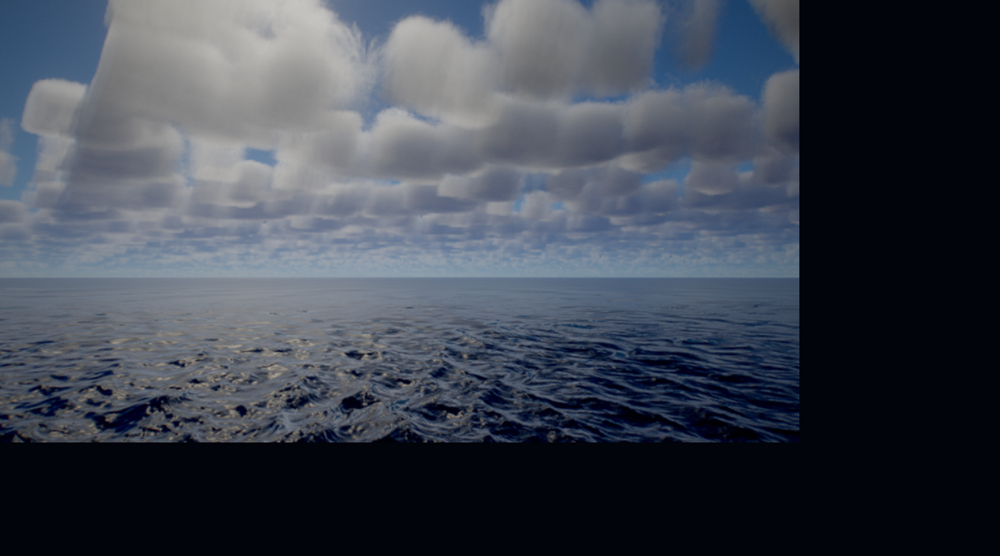
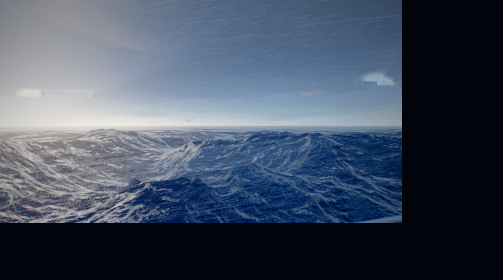

NOW · CASE 001当下目标
从零解释并复现海洋极端天气效果
以固定提交的真实演示为目标，回答效果由哪些视觉层组成、每层依据什么资料、最小实现顺序是什么，以及做到什么程度才算通过。
- 目标画面可观察、可拆解
- 论文、源码和运行证据可追溯
- 实现过程有阶段、有预算、有停止规则
- 最终留下可控制、可测试的环境模块
PRODUCT PLANNING GUIDE · REVISION 01
这是一份待实现产品的规划指导文档。当前以 natural-disasters 为 Case 001，完整记录如何从目标画面找到原始资料、读懂算法、从零复现、验证效果并封装能力；长期将同一流程迁移到任何陌生领域。
完成标准：下一次面对新领域时，可以按相同证据链得到可验证结果，而不是重新凭感觉摸索。
00 / GOAL CONTRACT
当前目标负责把方法做实，长期目标负责证明方法可以迁移。两者不能互相替代。
以固定提交的真实演示为目标，回答效果由哪些视觉层组成、每层依据什么资料、最小实现顺序是什么，以及做到什么程度才算通过。
把目标反推、来源追踪、算法翻译、浏览器验证和产品门禁抽成统一方法，迁移到火焰烟雾、角色动画、空间音频、程序化地形等新领域。
01 / UNIVERSAL LOOP
从一个可观察的目标结果开始，然后逐步收窄未知。流程的每一步都必须产生一个以后可复用的工程资产。
固定参考画面、交互或输出，写清观众必须看到什么。
产出：Target Brief找到论文、官方演讲、权威实现、固定源码和许可证。
产出：Source Ledger把视觉结果拆成可控制层，并映射到算法和代码模块。
产出：Effect Map每次只证明一个关键机制，不先堆完整场景。
产出：Bounded Demo固定镜头、参数、设备和指标，与目标逐层比较。
产出：Scorecard将一次性实现抽成生命周期、参数协议和调试接口。
产出：Adapter接入游戏、IP 或素材生产，验证它是否解决真实问题。
产出：Vertical Slice只把有运行证据、能跨案例复用的部分写入母方法。
产出：Pattern Update02 / EVIDENCE SYSTEM
论文说明方法从哪里来；源码说明作者如何实现；目标媒体说明想达到什么；运行证据说明我们实际证明了什么。四者不能混用。
回答算法提出者、假设、公式、限制和评估方法。
不能单独证明当前仓库实现正确。回答当前版本实际用了哪些模块、参数、Pass 和近似。
不能单独证明浏览器能够稳定运行。回答视觉层次、构图、尺度、光照和状态差异。
不能当作本地复现截图。回答某个固定环境中功能、状态、错误和性能观察。
不能外推到未测试设备和科学准确性。把来源、画面、源码与实验组织成可执行流程。
必须标明哪些结论仍是推断。描述版本、接口、门禁和资源预算。
规划不是已经具备的功能。优先使用作者、论文出版方、官方项目和固定提交链接。
03 / CASE 001 · NATURAL DISASTERS
观众看到的是一场风暴；实现上它是六个相互影响的渲染与编排系统。任意一层缺失，画面都会从“环境”退化成“单一特效”。

先建立地平线、海面频段和日照尺度。

云的体积、明暗和远近必须影响海面。

浪、云、雨、雾、镜头共同制造威胁。
TARGET_MEDIA 图片来自固定上游提交，只用于分析视觉目标；它们不是我们的复现结果或本地性能证据。
Rayleigh / Mie 散射与 LUT 提供天空颜色、太阳透射和远景雾化，让海洋与云使用同一套光照语境。
3D Perlin-Worley 密度与 2D 天气图定义云形，通过 ray marching 积分密度和光照，再用时域重投影降低成本。
三层 JONSWAP 波谱分别覆盖涌浪、风浪和细浪；GPU butterfly IFFT 生成位移与导数，Jacobian 和陡峭度驱动泡沫历史。
Weather 插值统一风、云、雨、雾和海况；海啸、疯狗浪和涡旋使用解析高度场，不是 CFD 或真实灾害预测。
幕次、镜头轨迹和事件触发共同安排“平静 → 积云 → 风暴 → 英雄事件 → 余波”，让技术结果被观众理解。
HDR、速度缓冲、TAA、自动曝光、Bloom、DOF、运动模糊与显示变换把多个高动态范围系统合成最终画面。
更新状态、时间、镜头、uniform 和资源调度
并行计算波场、体积、光照和最终像素
浏览器 Canvas 中连续、可编排的海洋环境
04 / RESOURCE ACQUISITION
一个高质量复现至少需要八类资源。缺少其中任何一类，都要在计划里显式标记，而不是让大模型或开发者自行猜测。
官方截图、视频、固定镜头、不同状态和动态节奏。
判断“要做到什么”论文、作者演讲、课程资料、公式和假设。
判断“为什么成立”作者代码、官方示例、测试和已知限制。
判断“如何正确实现”固定 commit、依赖、模块图、Shader 与构建脚本。
判断“仓库实际做了什么”浏览器、GPU、扩展、分辨率、质量档和设备限制。
判断“在哪里能运行”固定参数、截图、状态采样、帧时间与错误日志。
判断“我们证明了什么”代码许可证、媒体归属、模型/纹理来源和商用边界。
判断“能否继续使用”用户、使用场景、加载预算、输出格式和维护成本。
判断“是否值得产品化”05 / FROM ZERO ROADMAP
顺序的核心是先建立可观测性，再逐层增加物理和视觉复杂度。每个阶段都能独立失败、回退或停止。
选择晴朗、积云、剧烈风暴三个固定状态；确定桌面 WebGL2、目标分辨率、最低 FPS 和移动端回退。
固定论文、官方演讲、参考实现、目标 commit、依赖版本和许可证；建立问题到来源的映射。
建立 Three.js / WebGL2 应用、相机、渲染循环、HDR 目标、调试 HUD 和稳定截图入口。
实现透射、天空视图和环境光 LUT；提供太阳方向、浑浊度和曝光控制，并建立大气调试通道。
先做一个可验证频谱和 IFFT，再扩展到三层 cascade、投影网格、法线、Fresnel 和泡沫历史。
依次完成密度场、光照 march、时间重投影与上采样；每次保留 first-hit、density 和 tap-count 调试图。
把风、海况、云量、云底、雨、雾、太阳和曝光收口为 WeatherSpec，使用时间插值驱动所有系统。
先实现一个可控制的英雄事件，例如孤立波；同步提供 GPU 位移与 CPU 高度采样，定义开始、峰值和退出。
建立初始态、变化、近看、英雄事件和最终状态；所有时间从一个 DirectorState 计算。
按速度缓冲 → TAA → 曝光 → Bloom/DOF → 显示变换的顺序接入；每个 Pass 都能单独旁路。
测量 CPU/GPU 帧时间和资源体积；建立质量 preset、动态分辨率、错误状态、移动端静态回退与 dispose。
外部宿主只能通过稳定协议设置环境、触发事件、重播镜头、采集证据和释放资源。
06 / VALIDATION SYSTEM
视觉验收、数学诊断、运行正确性和产品可用性需要分别记录。通过一个层级，不能替代另一个层级。
固定镜头下，晴朗、积云和风暴是否在尺度、轮廓、明暗和运动上明显不同。
频谱、位移、导数、密度、首次命中和时域历史是否处于预期范围。
启动、状态切换、重播、复位、错误处理和资源释放是否可观察。
在命名设备、固定分辨率和质量档下记录 CPU/GPU 时间与资产成本。
第二个宿主能否通过协议使用能力，并在用户任务中产生可衡量价值。
天空、地平线、三层波频和反射方向
海面像平面噪声；地平线糊成一条线
截图 + spectrum stats云体轮廓、顶底明暗、远近和海面阴影
云像 billboard；颜色一致；运动闪烁
截图 + density/first-hit浪峰尺度、泡沫、雨雾、低云和威胁构图
只是整体变暗；海浪和天气互不关联
截图 + frame breakdown英雄事件生命周期、相机高度与 CPU/GPU 场一致
镜头穿模；事件无法重播或复位
录像 + sampled height复现问题，保存浏览器、Shader 编译、输入参数和当前截图。
只改变一个假设，验证是否产生新证据；禁止同时重构多个模块。
若仍无新增证据，停止自动修复并输出阻塞报告。
现象、已验证项、失败尝试、最可能根因、需要的新输入或决策。
07 / MODEL-ASSISTED EXPLORATION
最稳妥的产品形态不是每次让模型重新写 Shader，而是让模型使用经过验证的资料和协议，生成实现任务或结构化场景。
用于研究新算法：检索相关资料，解释公式，生成一个模块，运行浏览器，读取截图/日志，再进行有限修复。
用于稳定生产：把自然语言转为 WeatherSpec、EventSpec 和 ShotSpec，再交给确定性运行时执行、预览与导出。
{
"intent": "port-before-typhoon",
"weather": {
"sunElevation": 0.08,
"windSpeed": 32,
"cloudCoverage": 0.92,
"rain": 0.85,
"fog": 0.55,
"waveStrength": 0.90
},
"events": [
{ "type": "lightning", "at": 4.2 },
{ "type": "hurricane", "at": 8.0 }
],
"shots": ["harbor-wide", "wave-close", "storm-reveal"],
"quality": "medium",
"duration": 15
}08 / PRODUCT PLAN
下面全部属于 PLANNED，当前项目尚未实现这些版本。只有上一版本通过门禁，才进入下一版本。
固定目标、来源账本、能力图、实验卡、证据标签和停止规则。
从上游 Demo 抽取稳定生命周期、参数协议、事件与镜头调用。
模型只生成受约束的场景、天气、事件和镜头协议，运行时负责确定执行。
更换领域知识包和 Adapter，即可复用目标锁定、资料检索、实验、验收和产品决策流程。
上游内部可以复杂，但给产品的边界必须稳定、可验证、可释放。
init(host, options)
applySpec(weatherSpec)
trigger(eventSpec)
play(shotSequence)
captureEvidence()
reset()
dispose()
09 / TRANSFER TEST
不是换一个名词继续写同样的文档，而是在新领域中仍能得到可运行证据和产品边界。
更换：流体、体积密度、燃烧与粒子资料。
复用：目标镜头、来源账本、Pass 验收、性能档、Adapter。
产品切片：技能特效或 VFX 素材生成器更换：骨骼、IK、PBD、布料约束与毛发着色。
复用：视觉签名、状态协议、调试通道、真实设备门禁。
产品切片：个人 IP 角色表现系统更换：噪声、侵蚀、植被分布、LOD 和导航资料。
复用：目标反推、资源预算、证据截图、质量 preset。
产品切片：游戏关卡环境生成器更换：HRTF、混响、遮挡、响度和交互反馈资料。
复用：来源分级、对照实验、产品门禁和停止规则。
产品切片：沉浸式游戏声音运行时新领域能在一周内建立目标、来源和能力地图。
不修改母流程，只替换领域资料和验收信号。
至少一个最小模块产生真实运行证据。
能说清产品边界、接入成本和停止条件。
10 / REUSABLE TEMPLATES
模板的作用不是制造文档负担，而是确保目标、证据、实现和产品判断没有断层。
领域：
目标效果 / 产品结果：
目标用户与使用场景：
3–5 个参考画面或行为：
必须可见的变化：
目标平台与设备：
帧率 / 延迟 / 体积预算：
当前已有资源：
明确不做的范围：
成功标准：
停止条件：标题 / 作者 / 年份：
原始 URL / DOI / commit：
证据类别：PRIMARY_SOURCE | UPSTREAM_SOURCE | TARGET_MEDIA
解决的问题：
关键假设与公式：
可复用实现：
许可证 / 归属：
已知限制：
对应目标观察项：
下一项实验：目标画面 / 状态：
观众必须看到：
可控制原因：
对应系统 / 模块：
算法原理：
输入与输出：
固定验收镜头：
通过信号：
失败信号：
证据文件：假设：
只改变的一个变量：
固定输入 / seed / camera：
运行环境：browser / GPU / resolution / preset
观察指标：
预期结果：
实际截图 / 日志 / 数值：
结论：pass | continue | pivot | stop
下一步：
剩余修复预算：能力名称：
真实下游用例：
外部输入协议：
可观察输出 / 状态：
性能与资源预算：
生命周期：init / reset / dispose
错误与回退：
许可证边界：
第二宿主验证：
维护成本：
决策：adopt | watch | reject只填写探索简报和三张效果反推卡。
为每个核心机制创建来源卡，不做无问题链接收藏。
每次只运行一张实验卡，保存可比较证据。
只有真实用例出现后，才填写产品门禁卡。
END / WORKING THESIS
下一次遇到陌生领域，我们不从空白对话开始，而是从目标简报、来源账本、效果反推卡、单次实验和产品门禁继续。